Write a Python script in the litigation project that reads the filing deadlines table there and prints one line per matter as MATTER_ID,DUE_DATE (service date plus the response days, ISO dates), earliest due date first -- paralegals run it before the docket call, so skip rows with no service date.
{
"config": [
{
"type": "execute",
"parameters": {
"command": "python3 -c \"import os;b='/home/user/legal/litigation';os.makedirs(b,exist_ok=True);open(b+'/filing_deadlines.csv','w').write('matter_id,court,service_date,response_days\\nCV-2291,King County Superior,2024-03-04,20\\nCV-2304,Pierce County Superior,2024-02-19,30\\nCV-2310,US District W.D. Wash,,21\\nCV-2318,Snohomish Superior,2024-04-11,14\\nCV-2325,King County Superior,2024-01-30,45\\nCV-2331,Thurston Superior,,30\\nCV-2340,Pierce County Superior,2024-03-22,10\\n')\"",
"shell": true
}
}
],
"evaluator": {
"func": "check_include_exclude",
"result": {
"type": "vm_command_line",
"command": [
"python3",
"-c",
"import sys, traceback\ndef _main():\n import glob, os, subprocess, sys\n b = \"/home/user/legal/litigation\"\n expect = \"CV-2325,2024-03-15\\nCV-2304,2024-03-20\\nCV-2291,2024-03-24\\nCV-2340,2024-04-01\\nCV-2318,2024-04-25\"\n cands = [p for p in glob.glob(b + \"/**/*.py\", recursive=True) if os.path.isfile(p)]\n if not cands:\n print(\"no python script found under \" + b, file=sys.stderr)\n print(\"FAIL\")\n raise SystemExit\n for p in cands:\n try:\n r = subprocess.run([\"python3\", p], cwd=b, capture_output=True, text=True, timeout=60)\n except Exception as e:\n print(\"%s: %s\" % (p, e), file=sys.stderr)\n continue\n got = \"\\n\".join(l.strip().replace(\" \", \"\") for l in r.stdout.splitlines() if l.strip())\n if got == expect:\n print(\"PASS\")\n raise SystemExit\n print(\"%s output was:\\n%s\" % (p, got), file=sys.stderr)\n print(\"FAIL\")\n\ntry:\n _main()\nexcept Exception:\n traceback.print_exc(file=sys.stderr)\n print(\"FAIL\")\n"
]
},
"expected": {
"type": "rule",
"rules": {
"include": [
"PASS"
],
"exclude": [
"FAIL"
]
}
}
}
}
step 1 22:54:14
THINKINGThe user wants me to write a Python script in a "litigation project" that reads a "filing deadlines table". I need to first explore the file system to find this litigation project. Let me take a screenshot to see the current state, then open a file manager or terminal to locate the project.
I should start by opening a terminal to explore. Let me first dismiss the notification and open a terminal application. I'll look for a terminal - I can use the Files app or find a terminal. Let me open a terminal via the Activities or check for a terminal app.
Best approach: open a terminal. I don't see a terminal icon in the dock. I can use the Files application, or open a terminal via xterm. Let me try opening a terminal by using the Activities overview to search.
Actually, let me first take a screenshot to confirm state, then explore.
ACTIONI'll start by taking a screenshot to see the current desktop state, then locate the litigation project.
THINKINGI need to find the "litigation project" directory. There's no terminal in the dock. I'll open a terminal. The best way is to open the Files application first, or use a terminal. Let me try opening a terminal via the Activities search, or I can launch xterm.
Actually, the simplest reliable way is to open a terminal application. Let me use the Files app (Nautilus) icon in the dock, but I really need a terminal to write a script. Let me open a terminal. I'll try right-clicking the desktop, or use the Files app to navigate.
Let me open a terminal via the Activities overview - click Activities, type "terminal".
ACTIONI'll open a terminal to locate the litigation project. Let me use the Activities overview to search for a terminal.
EXECUTED (pyautogui in VM)pyautogui.click(993, 172)
step 5 22:55:04
THINKINGTerminal is open. Now I need to find the "litigation project" directory and the "filing deadlines table". Let me search the home directory. I'll look for a directory named litigation and any data files.
ACTIONTerminal is open. Let me locate the litigation project and the filing deadlines table.
THINKINGThe command hasn't executed yet - it's still on the command line. The newline in my type may not have triggered Enter, or it's still processing. Let me press Enter to be safe and take a screenshot.
ACTIONThe command is typed but hasn't executed. Let me press Enter.
EXECUTED (pyautogui in VM)pyautogui.press("return")
step 8 22:55:50
THINKINGFound:
- Project: /home/user/legal/litigation
- Table: /home/user/legal/litigation/filing_deadlines.csv
Let me inspect the CSV to understand the columns.
ACTIONFound the project at `/home/user/legal/litigation` with `filing_deadlines.csv`. Let me inspect its contents to understand the column structure.
EXECUTED (pyautogui in VM)pyautogui.press("return")
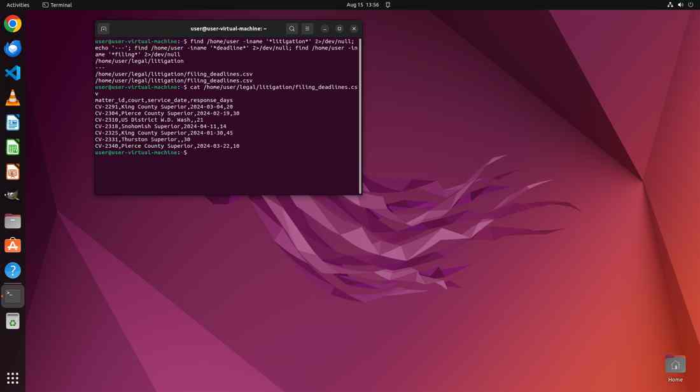
step 10.1 22:56:37
THINKINGNow I can read the CSV:
```
matter_id,court,service_date,response_days
CV-2291,King County Superior,2024-03-04,20
CV-2304,Pierce County Superior,2024-02-19,30
CV-2310,US District W.D. Wash,,21
CV-2318,Snohomish Superior,2024-04-11,14
CV-2325,King County Superior,2024-01-30,45
CV-2331,Thurston Superior,,30
CV-2340,Pierce County Superior,2024-03-22,10
```
Columns: matter_id, court, service_date, response_days. Some service_date are empty (CV-2310, CV-2331) - those should be skipped.
Now I'll write the Python script. Requirements:
- Read the filing deadlines table (CSV).
- For each matter, print one line: MATTER_ID,DUE_DATE where DUE_DATE = service_date + response_days, ISO date.
- Skip rows with no service date.
- Sort by earliest due date first.
I'll write a script using csv module and datetime. Let me create it in the litigation project directory. I'll name it something sensible like deadlines.py.
Let me write it with a heredoc via cat. Using single quotes for the heredoc delimiter to avoid shell expansion.
Let me write:
```python
#!/usr/bin/env python3
"""Print filing deadlines (matter_id,due_date) sorted earliest first."""
import csv
import os
from datetime import date, timedelta
BASE = os.path.dirname(os.path.abspath(__file__))
CSV_PATH = os.path.join(BASE, "filing_deadlines.csv")
def parse_date(value):
value = (value or "").strip()
if not value:
return None
return date.fromisoformat(value)
def main():
rows = []
with open(CSV_PATH, newline="") as fh:
reader = csv.DictReader(fh)
for rec in reader:
matter_id = (rec.get("matter_id") or "").strip()
service = parse_date(rec.get("service_date"))
if service is None:
continue # skip rows with no service date
days_raw = (rec.get("response_days") or "").strip()
days = int(days_raw)
due = service + timedelta(days=days)
rows.append((due, matter_id))
rows.sort(key=lambda item: item[0])
for due, matter_id in rows:
print(f"{matter_id},{due.isoformat()}")
if __name__ == "__main__":
main()
```
I'll create the file with a heredoc. I need to be careful with the terminal typing and newlines. Since earlier my embedded newline didn't auto-execute, I think the `type` action includes the newline but it doesn't submit - actually the earlier find command I typed with embedded \n and it appeared on two lines but then needed an extra Enter. It seems the type action's trailing newline didn't register as Enter. Actually the issue: my type text ended with a newline which should press Enter. But the terminal showed the prompt still. Perhaps the newline in type is being sent but the terminal treats it fine... Actually looking back, the find command I typed had no trailing newline (it ended after `*filing*` 2>/dev/null with no \n). Then I pressed Enter separately. That worked.
For a heredoc, I'll type the whole thing including newlines, and the final line `EOF` then Enter. The type action should handle embedded newlines by sending them. Let me type the heredoc. I'll append a trailing newline after EOF to be safe, but to avoid double-execution issues I'll type the content ending with `EOF` and then separately press Enter.
Let me construct the type text with a heredoc using 'PYEOF' quoted.
ACTIONThe CSV has columns `matter_id,court,service_date,response_days`, with two rows (CV-2310, CV-2331) missing a service date that I'll need to skip. Now I'll write the Python script using a heredoc.
TOOL CALL<tool_call>
<function=computer_use>
<parameter=action>
type
</parameter>
<parameter=text>
cat > /home/user/legal/litigation/deadlines.py << 'PYEOF'
#!/usr/bin/env python3
"""Print filing deadlines before the docket call.
Reads filing_deadlines.csv from this project and prints one line per
matter as MATTER_ID,DUE_DATE where DUE_DATE is the service date plus the
response days (ISO format). Rows with no service date are skipped, and
the output is sorted by earliest due date first.
"""
import csv
import os
from datetime import date, timedelta
BASE = os.path.dirname(os.path.abspath(__file__))
CSV_PATH = os.path.join(BASE, "filing_deadlines.csv")
def parse_date(value):
"""Return a date from an ISO string, or None if the value is empty."""
value = (value or "").strip()
if not value:
return None
return date.fromisoformat(value)
def main():
rows = []
with open(CSV_PATH, newline="") as fh:
reader = csv.DictReader(fh)
for rec in reader:
matter_id = (rec.get("matter_id") or "").strip()
service = parse_date(rec.get("service_date"))
if service is None:
# Paralegals: skip rows with no service date.
continue
days = int((rec.get("response_days") or "0").strip())
due = service + timedelta(days=days)
rows.append((due, matter_id))
rows.sort(key=lambda item: item[0])
for due, matter_id in rows:
print(f"{matter_id},{due.isoformat()}")
if __name__ == "__main__":
main()
PYEOF
</parameter>
</function>
</tool_call>
EXECUTED (pyautogui in VM)pyautogui.typewrite("cat > /home/user/legal/litigation/deadlines.py << 'PYEOF'")
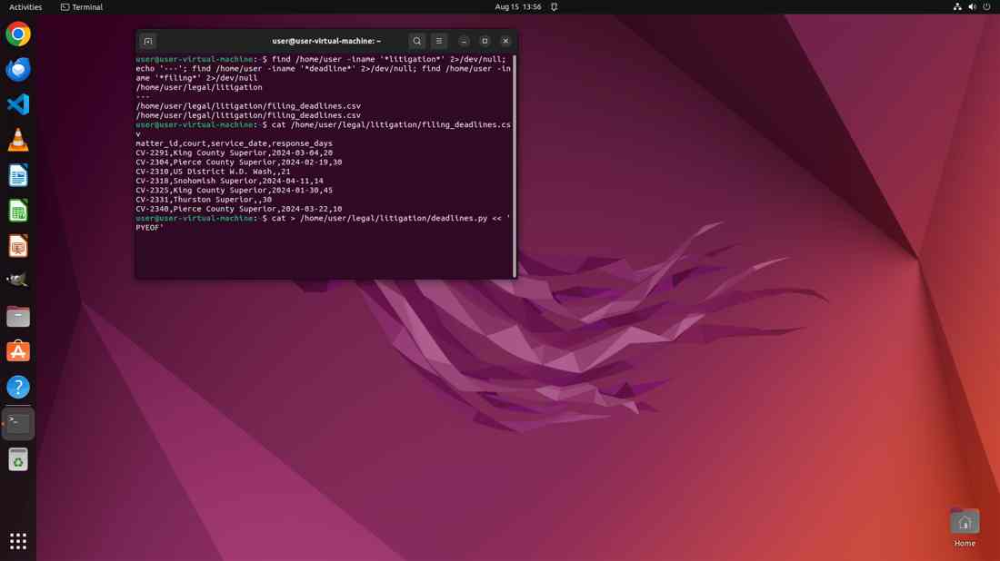
step 10.2 22:56:43
same model call as the previous action
EXECUTED (pyautogui in VM)pyautogui.press("enter")
step 10.3 22:56:48
same model call as the previous action
EXECUTED (pyautogui in VM)pyautogui.typewrite("#!/usr/bin/env python3")
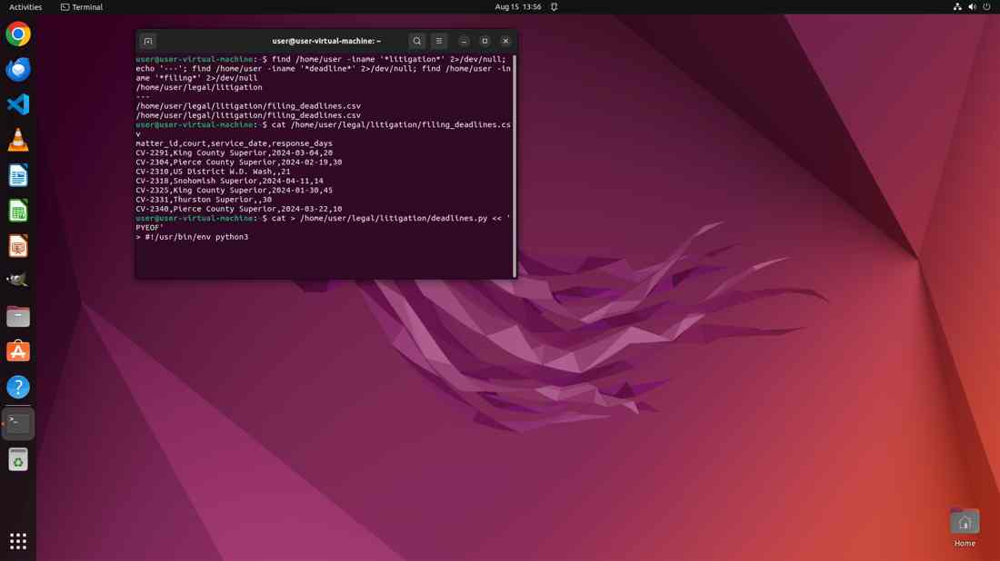
step 10.4 22:56:54
same model call as the previous action
EXECUTED (pyautogui in VM)pyautogui.press("enter")
step 10.5 22:56:58
same model call as the previous action
EXECUTED (pyautogui in VM)pyautogui.typewrite("\"\"\"Print filing deadlines before the docket call.")
step 10.6 22:57:03
same model call as the previous action
EXECUTED (pyautogui in VM)pyautogui.press("enter")
step 10.7 22:57:08
same model call as the previous action
EXECUTED (pyautogui in VM)pyautogui.press("enter")
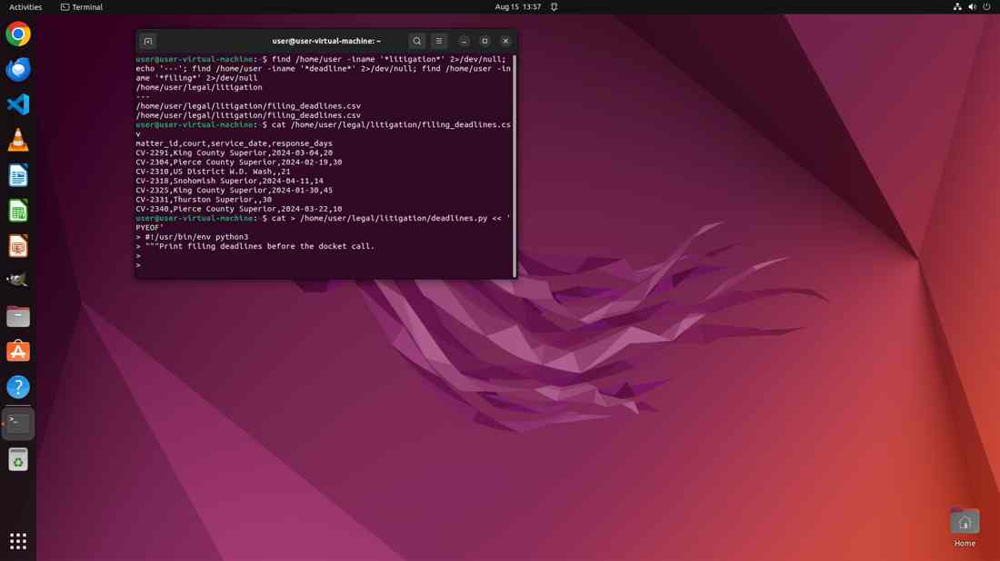
step 10.8 22:57:13
same model call as the previous action
EXECUTED (pyautogui in VM)pyautogui.typewrite("Reads filing_deadlines.csv from this project and prints one line per")
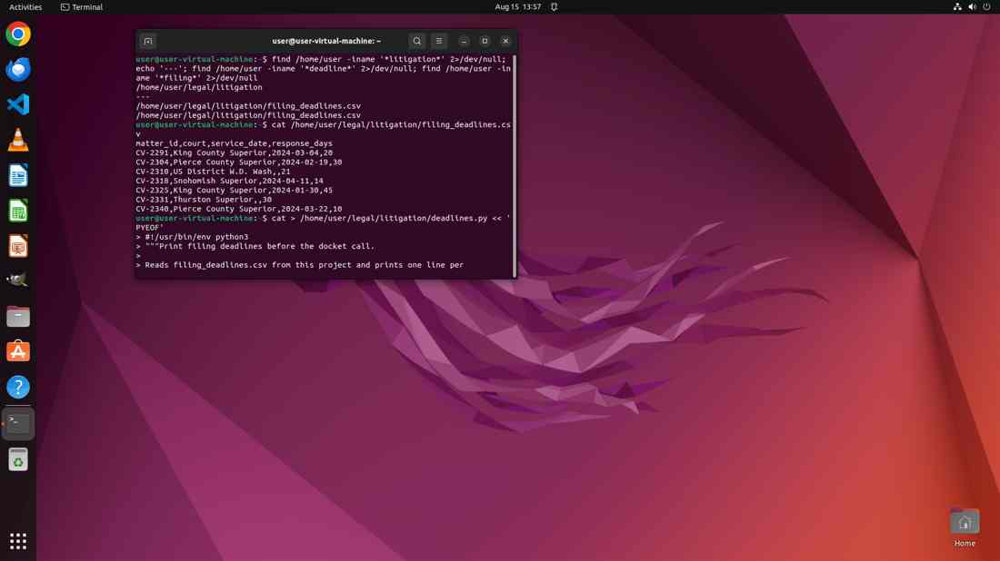
step 10.9 22:57:22
same model call as the previous action
EXECUTED (pyautogui in VM)pyautogui.press("enter")
step 10.10 22:57:27
same model call as the previous action
EXECUTED (pyautogui in VM)pyautogui.typewrite("matter as MATTER_ID,DUE_DATE where DUE_DATE is the service date plus the")
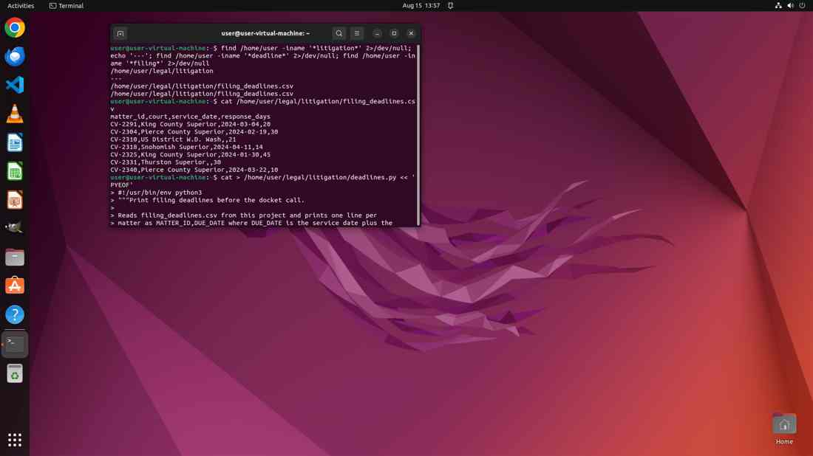
step 10.11 22:57:34
same model call as the previous action
EXECUTED (pyautogui in VM)pyautogui.press("enter")
step 10.12 22:57:39
same model call as the previous action
EXECUTED (pyautogui in VM)pyautogui.typewrite("response days (ISO format). Rows with no service date are skipped, and")
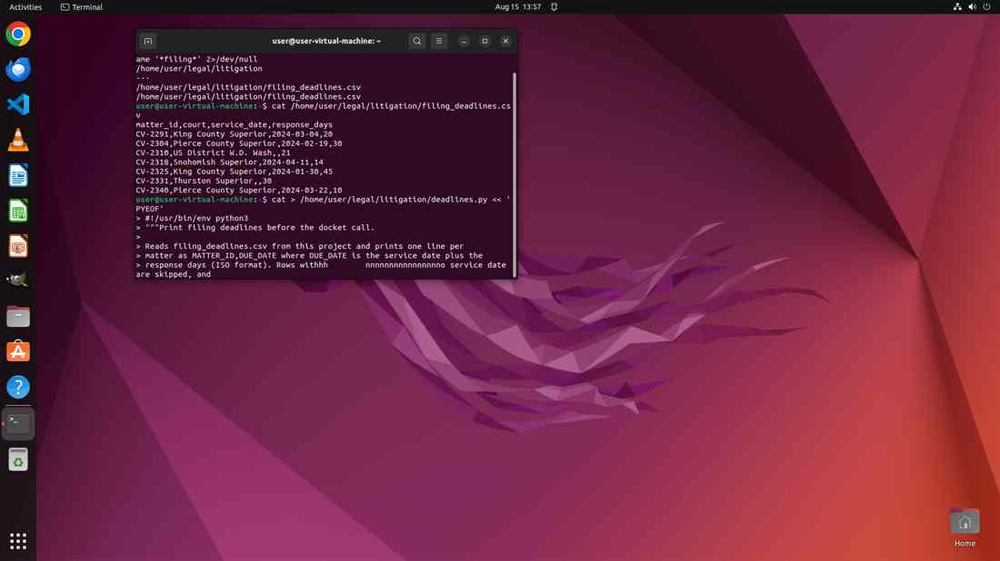
step 10.13 22:57:56
same model call as the previous action
EXECUTED (pyautogui in VM)pyautogui.press("enter")
step 10.14 22:58:03
same model call as the previous action
EXECUTED (pyautogui in VM)pyautogui.typewrite("the output is sorted by earliest due date first.")
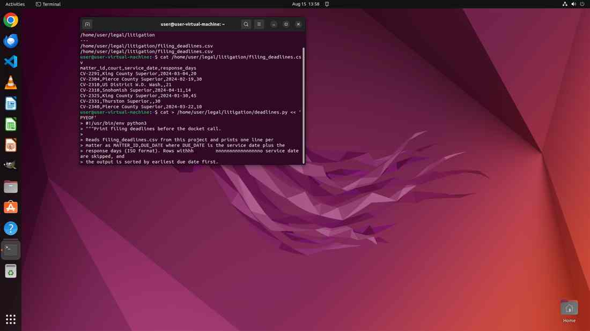
step 10.15 22:58:08
same model call as the previous action
EXECUTED (pyautogui in VM)pyautogui.press("enter")
step 10.16 22:58:12
same model call as the previous action
EXECUTED (pyautogui in VM)pyautogui.typewrite("\"\"\"")
step 10.17 22:58:17
same model call as the previous action
EXECUTED (pyautogui in VM)pyautogui.press("enter")
step 10.18 22:58:22
same model call as the previous action
EXECUTED (pyautogui in VM)pyautogui.typewrite("import csv")
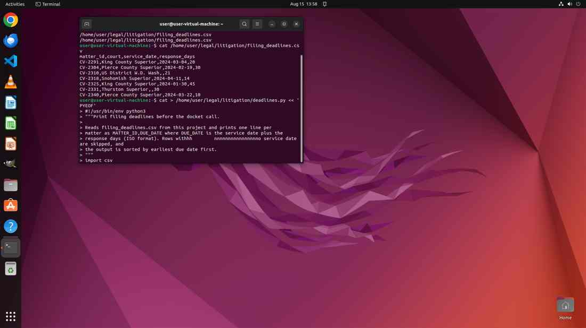
step 10.19 22:58:26
same model call as the previous action
EXECUTED (pyautogui in VM)pyautogui.press("enter")
step 10.20 22:58:31
same model call as the previous action
EXECUTED (pyautogui in VM)pyautogui.typewrite("import os")
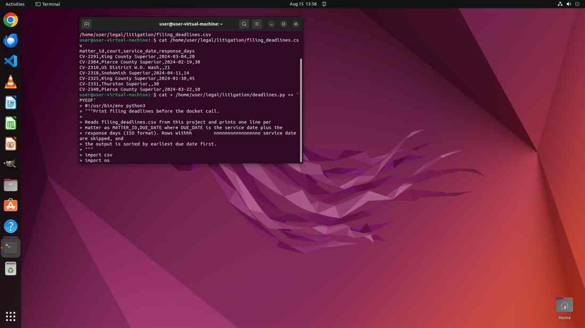
step 10.21 22:58:35
same model call as the previous action
EXECUTED (pyautogui in VM)pyautogui.press("enter")
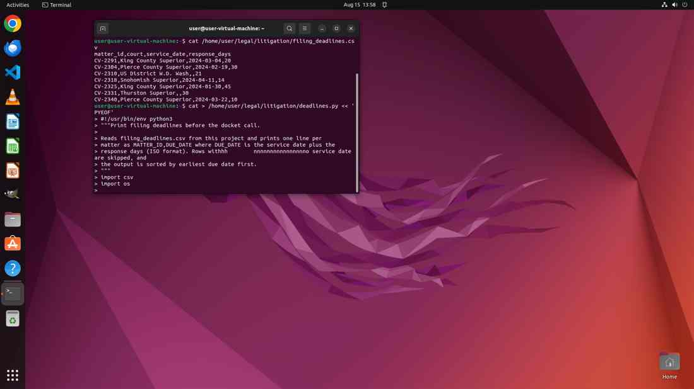
step 10.22 22:58:39
same model call as the previous action
EXECUTED (pyautogui in VM)pyautogui.typewrite("from datetime import date, timedelta")
step 10.23 22:58:44
same model call as the previous action
EXECUTED (pyautogui in VM)pyautogui.press("enter")
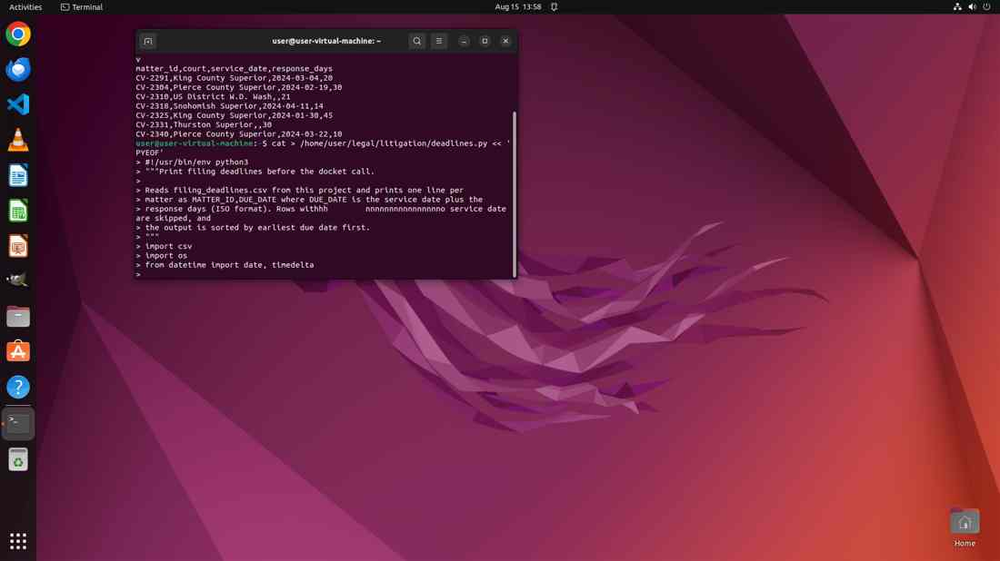
step 10.24 22:58:48
same model call as the previous action
EXECUTED (pyautogui in VM)pyautogui.press("enter")
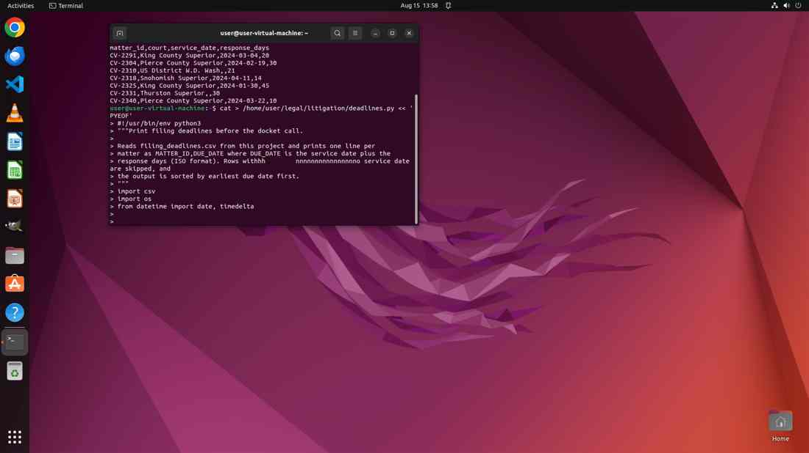
step 10.25 22:58:52
same model call as the previous action
EXECUTED (pyautogui in VM)pyautogui.typewrite("BASE = os.path.dirname(os.path.abspath(__file__))")
step 10.26 22:58:56
same model call as the previous action
EXECUTED (pyautogui in VM)pyautogui.press("enter")
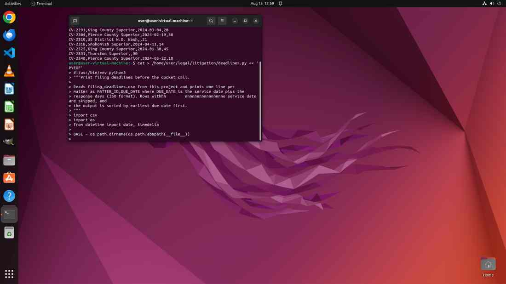
step 10.27 22:59:01
same model call as the previous action
EXECUTED (pyautogui in VM)pyautogui.typewrite("CSV_PATH = os.path.join(BASE, \"filing_deadlines.csv\")")
step 10.28 22:59:05
same model call as the previous action
EXECUTED (pyautogui in VM)pyautogui.press("enter")
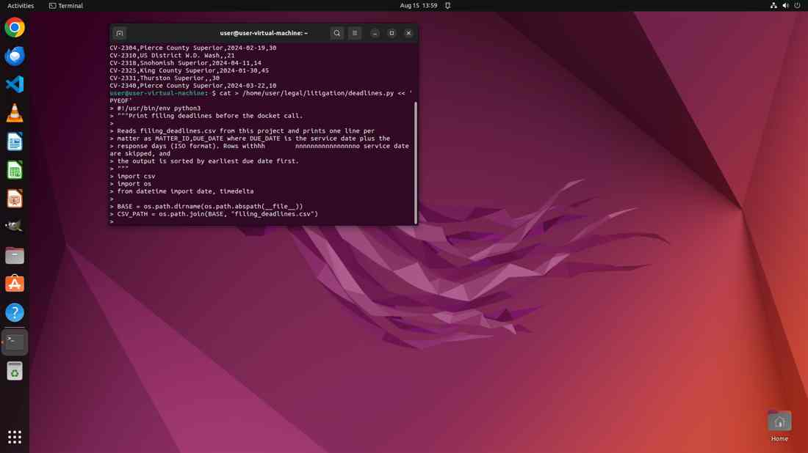
step 10.29 22:59:09
same model call as the previous action
EXECUTED (pyautogui in VM)pyautogui.press("enter")
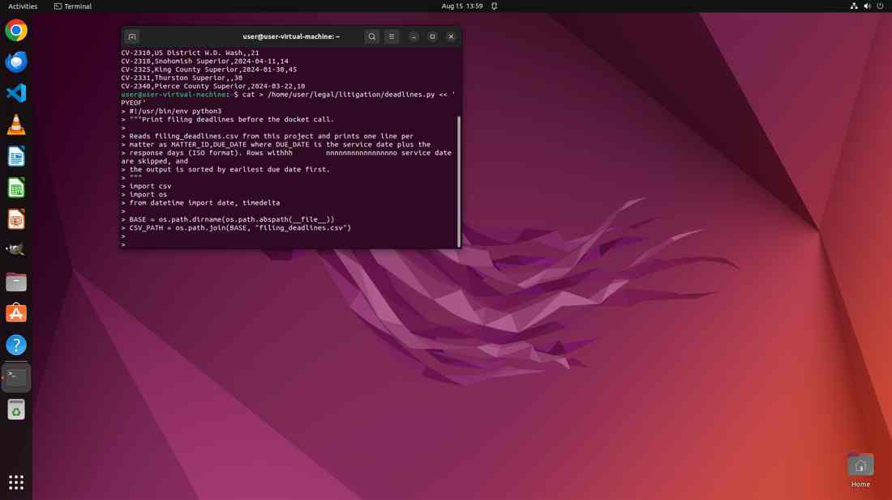
step 10.30 22:59:14
same model call as the previous action
EXECUTED (pyautogui in VM)pyautogui.press("enter")
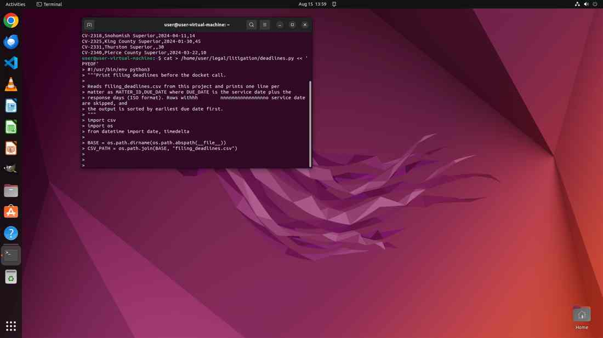
step 10.31 22:59:18
same model call as the previous action
EXECUTED (pyautogui in VM)pyautogui.typewrite("def parse_date(value):")
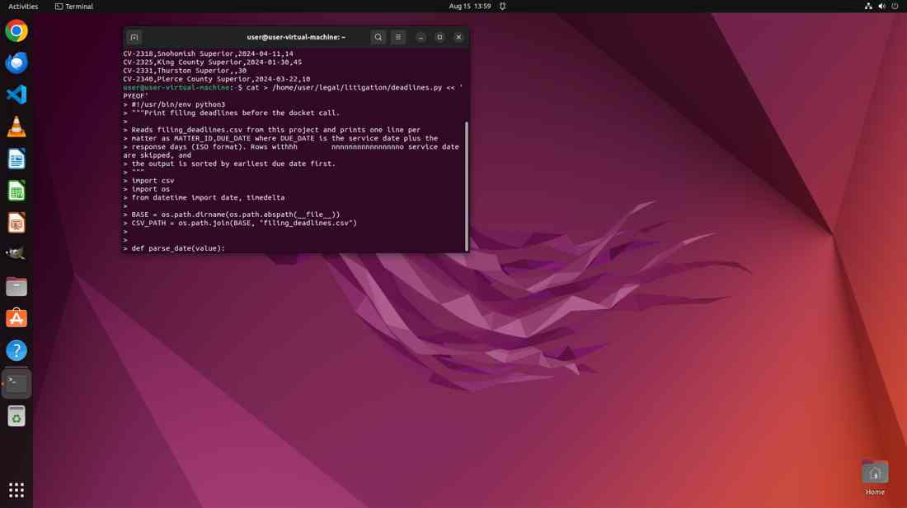
step 10.32 22:59:22
same model call as the previous action
EXECUTED (pyautogui in VM)pyautogui.press("enter")
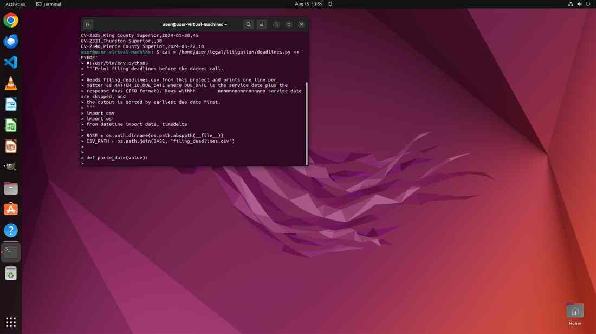
step 10.33 22:59:27
same model call as the previous action
EXECUTED (pyautogui in VM)pyautogui.typewrite(" \"\"\"Return a date from an ISO string, or None if the value is empty.\"\"\"")
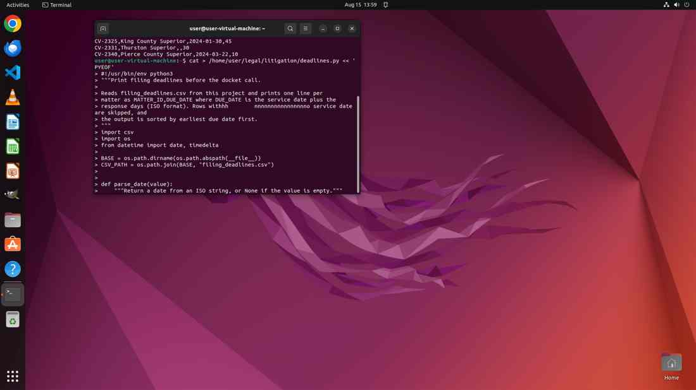
step 10.34 22:59:31
same model call as the previous action
EXECUTED (pyautogui in VM)pyautogui.press("enter")
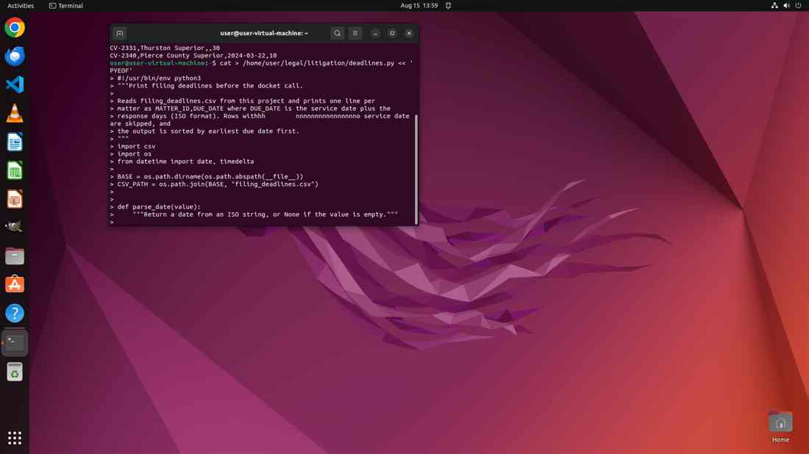
step 10.35 22:59:36
same model call as the previous action
EXECUTED (pyautogui in VM)pyautogui.typewrite(" value = (value or \"\").strip()")
step 10.36 22:59:41
same model call as the previous action
EXECUTED (pyautogui in VM)pyautogui.press("enter")
step 10.37 22:59:46
same model call as the previous action
EXECUTED (pyautogui in VM)pyautogui.typewrite(" if not value:")
step 10.38 22:59:51
same model call as the previous action
EXECUTED (pyautogui in VM)pyautogui.press("enter")